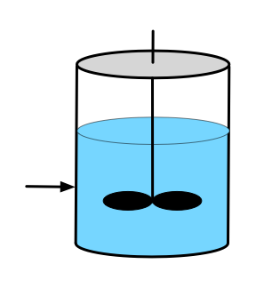
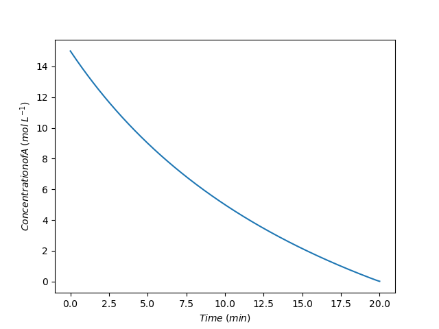
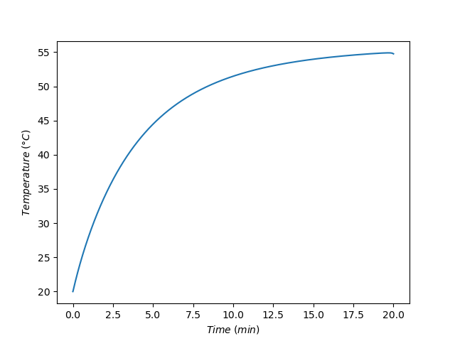
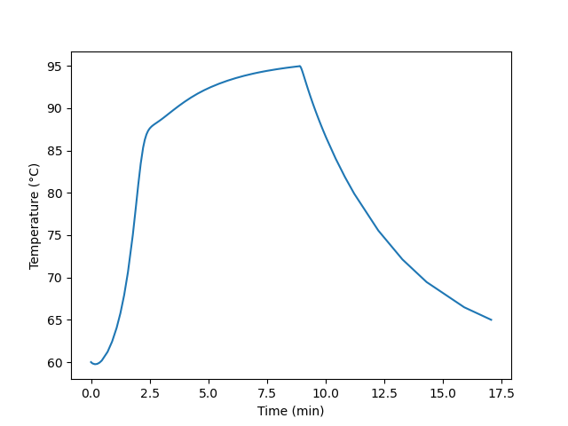
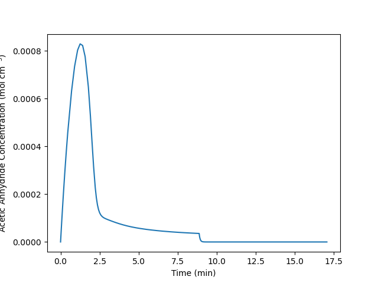

| Addition Time (h) | Conversion of B (%) | Selectivity for D over U | Yield of D from B (%) |
|---|---|---|---|
| 1 | 84.4 | 3.18 | 51.5 |
| 3 | 80.8 | 3.77 | 52.4 |
| 5 | 75.5 | 4.4 | 51.7 |
| 7 | 68 | 5.35 | 49.1 |
10 SBSTR Analysis
The primary difference between semi-batch stirred tank reactors (SBSTRs) and BSTRs is that fluid flows into or out of an SBSTR during some part of the time when reaction is taking place. This chapter describes operation of semi-batch reactors, examines how flow in or out affects reactor response, and highlights advantages and disadvantages of SBSTRs, particularly as compared to BSTRs. In terms of reactor modeling and analysis, only analysis of SBSTRs where fluid flows in during reaction is described and illustrated. The modeling of SBSTRs where fluid leaves the reactor during reaction is not not considered.

10.1 SBSTR Characteristics
As is the case for the other ideal stirred-tank reactors, one essential characteristic of an SBSTR is that the reacting fluid within it is always perfectly mixed. As discussed in Chapter 9 for batch reactors, it is not essential that the reactor takes the form of a stirred tank. Any reactor that is perfectly mixed and that has fluid flowing in or out while reaction is occurring can be modeled as an SBSTR. Nonetheless, in commercial practice SBSTRs most commonly are stirred tanks.
The addition and/or removal of heat from the reacting fluid in a stirred tank is described in Section E.1 for systems where a separate heat exchange fluid is employed. Chapter 9 describes three geometries involving a perfectly mixed heat exchange fluid: a shell/jacket, an immersed coil, and an external heat exchanger (see Figure 9.1). These three configurations apply equally to SBSTRs. While other means of heat exchange are sometimes used, Reaction Engineering Basics only considers heat exchange between the reacting fluid and a perfectly mixed heat exchange fluid. Mass and energy balances on the exchange fluid for such systems are considered in Chapter 6.3 and Appendix E.1.
The characteristic that differentiates between a BSTR and an SBSTR is flow of reagents into or out of the reactor while the reaction is taking place. When reagents flow into the reactor during reaction, the SBSTR is sometimes referred to as a “fed-batch” reactor. A common form of semi-batch operation where reacting fluid leaves the reactor involves simple “reactive separation.”
10.1.1 Batch-Fed SBSTRs
Two advantages over BSTRs can be realized by adding one reagent to an SBSTR over time. One advantage is control of the rate of heat release. An example is the neutralization of a strong acid using a strong base. Such reactions can have very high rates and be highly exothermic. If all of the reagents are added at once, as in a BSTR, it may not be possible to remove heat fast enough to safely control the temperature. By slowly adding one of the reactants over time, the rate of heat release is limited by the rate of reagent addition and not the rate of reaction. The rate of addition can then be matched to the rate at which heat can be removed. In this way, the temperature can be controlled allowing the reaction to occur safely.
When two or more reactions take place, semi-batch operation with the addition of one reagent can sometimes be used to control selectivity. This happens when the rates of the desired and undesired reactions exhibit different dependence upon the concentrations of the reactants. To illustrate, consider a reaction between reagents A and B. In a BSTR process, the concentrations of A and B would be largest at the start of processing and would remain comparable throughout processing. Suppose instead, that reagent A is present at full concentration at the start of processing, but that reagent B is added to it over time. In this way, the concentration of A can be kept as large as possible while that of B is as low as possible over the course of processing. If the rate of the desired reaction is more favored by high concentration of A and low concentration of B, then semi-batch processing will result in better selectivity than batch processing.
The instantaneous selectivity defined in Equation 4.5 can be very useful in identifying situations where an SBSTR might present an advantage over a BSTR. Continuing with the example mentioned in the preceding paragraph, suppose that the desired reaction is first order in both reagents, A and B, and that the undesired reaction is second order in reagent B. In this situation, the instantaneous selectivity is given by Equation 10.1. The rightmost expression for the selectivity clearly shows that high concentration of A and low concentration of B result in higher selectivity for D over U. Example 10.5.2 illustrates this situation.
\[ S_{D/U,inst} = \frac{\displaystyle \sum _j r_{D,j}}{\displaystyle \sum _j r_{U,j}} = \frac{k_DC_AC_B}{k_UC_B^2} = \frac{k_D}{k_U} \frac{C_A}{C_B} \tag{10.1}\]
10.1.2 Reactive Separation SBSTRs
Generally the descriptor, “reactive separation,” applies to a wide range of processes wherein reaction and separation occur simultaneously. A number of different types of reactors fall into the category of reactive separation processes. Membrane reactors and reactive distillation columns are reactive separation devices. For present purposes, the term “reactive separation SBSTR” is limited to a two-phase, stirred-tank reactor, for example a reactor where the reacting fluid is boiling and the resulting vapor is removed during processing.
Reactive separation SBSTRs can offer an advantage when a reversible reaction is taking place. Specifically, if one of the products of the reaction is more volatile than the reactants, higher conversion can result in a reactive separation SBSTR than the conversion that would be realized using a BSTR. When using a BSTR, the maximum possible conversion is that where the reaction is becomes equilibrated. When that conversion is reached, the rate equals zero and no further conversion is possible. In contrast, in a reactive separation SBSTR one of the products of the reaction continually boils off and is removed. As a consequence, at a conversion where the BSTR was equilibrated, the SBSTR is not equilibrated because some of the product has been removed. In this way, a reactive separation SBSTR can reach a greater conversion than is possible in a BSTR.
The modeling and analysis of reactive separation SBSTRs is not considered in Reaction Engineering Basics. The presence of two phases, and particularly the presence of an interface between the two phases introduces the possibility that neither of the two phases is perfectly mixed. Put differently, it is often found that there are concentration gradients in the fluids near either or both sides of the interface. If such concentration gradients exist, then the fluid is not perfectly mixed, and it is necessary to modify the SBSTR design equations. Reacting multi-phase systems with interfacial gradients are typically studied in more advanced courses on reaction engineering.
10.1.3 Other Advantages and Disadvantages of SBSTRs
BSTRs and SBSTRs are both non-continuous reactors, so in comparison to continuous reactors, they have the same advantages and disadvantages. Their advantages include versatility (using the same reactor at different times to run different reactions) and flexibility such as the ability sequentially vary the processing temperature. Their disadvantages are that their operation is labor intensive and they have lower net rates due to turnaround times. Generally SBSTRs and BSTRs are better suited to production of value added products and not commodity products.
Three possible advantages of SBSTRs over BSTRs have already been mentioned: controling selectivity or temperature using the rate of reagent addition and increasing conversion in reversible reactions by removal of products. When one of these three effects can be used to advantage, an SBSTR is preferred. Arguably, operation of an SBSTR is slightly more involved than that of a BSTR, so without one of those advantages, a BSTR is likely preferred.
10.2 SBSTR Operation
The operation of SBSTRs is very much like that of BSTRs (see Chapter 9), the exception being that during some stages of the operational protocol, reagents are being added to SBSTRs. Operation of SBSTRs includes turnaround time, thereby allowing the definition of a net rate of production of a product like that for BSTRs, Equation 9.1. Very often, processes begin as fed semi-batch processes, but then, when the reactor becomes full, the feed is stopped and they continue as batch processes.
When a reagent is fed to an SBSTR, the feed rate is often a critical factor. In some SBSTR processes, the feed rate controls the rate of reaction. Early in the process it may be essential to maintain a low feed rate, and thereby a low reaction rate, in order to control temperature rise. As the process progresses, the reaction rate will naturally decrease due to consumption of the reagent initially added to the reactor. This suggests that the feed rate could be increased over time. Alternatively, there may be a point at which the reaction rate is sufficiently low that it no longer needs to be limited by the feed rate and the remaining fed reactant can be added all at once. The net rate may be larger if a variable feed rate is used. This presents a variety of ways to optimize net rate, yield, or selectivity in an isolated SBSTR process.
10.3 SBSTR Design Equations
The ideal SBSTR design equations are derived in Appendix E.3 and they are discussed in Section 6.4. Energy balances on the heat exchange fluid are discussed in Section 6.3. The SBSTR mole balance, Equation 6.19; SBSTR energy balance, Equation 6.20; exchange fluid sensible heat energy balance, Equation 6.2; and exchange fluid latent heat energy balance, Equation 6.6; are reproduced below.
\[ \frac{dn_i}{dt} = \dot n_{i,in} + V \sum_j \nu_{i,j}r_j \]
\[ \sum_i \left( n_i \hat C_{p,i}\right) \frac{dT}{dt} -V\frac{dP}{dt} - P\frac{dV}{dt} = \dot Q - \dot W - \sum_i \dot n_{i,in} \int_{T_{in}}^T \hat C_{p,i}dT - V\sum_j r_j \Delta H_j \]
\[ \rho_{ex} V_{ex} \tilde C_{p,ex}\frac{dT_{ex}}{dt} = -\dot Q - \dot m_{ex} \int_{T_{ex,in}}^{T_{ex}} \tilde C_{p,ex}dT \]
\[ \frac{\rho_{ex} V_{ex} \Delta H_{\text{latent},ex}^0}{M_{ex}} \frac{d \gamma}{dt} = - \dot Q - \gamma \dot m_{ex} \frac{\Delta H_{\text{latent},ex}^0}{M_{ex}} \]
Note
As was the case with BSTRs, it is important to notice that the \(V\frac{dP}{dt}\) and \(P\frac{dV}{dt}\) terms in the reacting fluid energy balance will have units of pressure volume time-1. Most of the other terms will have units of energy time-1. This means that a unit conversion is needed. One easy way to do this is to multiply the \(V\frac{dP}{dt}\) and \(P\frac{dV}{dt}\) terms by the ideal gas constant in units of energy mol-1 temperature-1 and divide by the ideal gas constant in units of pressure volume mol-1 temperature-1. The moles and temperatures cancel out giving the necessary conversion factor. This works even for a liquid phase system because the ideal gas law is not being used as the equation of state (i. e. to convert from pressure volume to mol temperature). In Reaction Engineering Basics the rate of doing work, \(\dot{W}\) is almost always negligible. However, if it is non-zero, it will likely have units of power (e. g. hp) or pressure volume time-1, and again a unit conversion is needed.
Common simplifications of the SBSTR design equations were presented in Chapter 6.5. For convenience, they are summarized below. The sensible heat terms in the mole and energy balances above are written in terms of molar heat capacities. They can also be written in terms of the volumetric or gravimetric heat capacity of the reactiong fluid as a whole.
\[ \left(\sum_i n_i \hat C_{p,i} \right) \frac{dT}{dt}\ \Leftrightarrow\ \rho V \tilde C_p \frac{dT}{dt}\ \Leftrightarrow\ V \breve C_p \frac{dT}{dt} \]
\[ \sum_i \dot n_{i,in} \int_{T_{in}}^T \hat C_{p,i}dT\ \Leftrightarrow\ \rho \dot V_{in} \int_{T_{in}}^T \tilde C_pdT\ \Leftrightarrow\ \dot V_{in} \int_{T_{in}}^T \breve C_pdT \]
When the reacting fluid is an ideal gas, the reacting fluid volume, \(V\), is constant (assuming rigid reactor walls), and its time derivative is equal to zero. For an incompressible ideal liquid reacting fluid the time derivative of the reacting fluid volume is equal to the volumetric feed rate, and if the feed rate is constant, that expression can be integrated to get an expression for the reacting fluid volume.
\[ \frac{dV}{dt} = \dot V_{in} \]
\[ V = V_0 + \dot V_{in}t \]
When heat is added or removed using a heat exchange fluid, the rate of heat removal can be expressed in terms of the heat transfer coefficient and area. When rate expressions are substituted into the mole and energy balances, they may introduce concentration or, for gases, partial pressures. The instantaneous values of those composition variables are found using their defining equations. It is important to recognize that unlike a BSTR, the fluid volume in the defining equation for concentration will be changing during the time when feed is being added.
\[ \dot Q = UA\left( T_{ex} - T \right) \]
\[ C_i = \frac{n_i}{V} \]
\[ P_i = \frac{n_iRT}{V} \]
10.4 General Approach to Modeling SBSTRs
The analysis of SBSTRs is very similar to the analysis of BSTRs which is described in Chapter 9. After identifying the assigment as one involving the analysis of an isolated ideal SBSTR, Chapter 7, the analysis can be completed in four general steps (Chapter 8): summarize the information provided, formulate the solution mathematically, implement the solution numerically, and present and discuss the results.
Summarizing an SBSTR analysis assignment is essentially the same as summarizing a BSTR analysis assignment. As with BSTRs, the summary should indicate the number of stages in the operating protocol. If the reactor operates as an SBSTR in some stages and as a BSTR in others, that information should be included in the summary.
The mathematical formulation will always entail selecting the reactor design equations needed to model each stage of the operating protocol and simplifying them as appropriate for the specific reactor being analyzed. When analyzing an SBSTR, the reactor design equations will always be IVODEs with elapsed time as the independent variable. Because the reactor design equations are IVODEs, the mathematical formulation should also specify the initial values and stopping criterion for each stage of the operational protocol.
It is possible that the number of SBSTR design equations will be one less than the number of dependent variables appearing in them. The reason for this is that the reacting fluid energy balance introduces three dependent variables. Assuming the reactor walls to be rigid, for a gas-phase reacting fluid, \(\frac{dV}{dt}\) will equal zero, but both \(\frac{dT}{dt}\) and \(\frac{dP}{dt}\) will be non-zero. This same situation was encountered with BSTRs, and it is handled in the same way when modeling SBSTRs. A differential form of the ideal gas law, Equation 6.11 and below, is used. It is either added to the SBSTR design equations or it is solved for \(\frac{dP}{dt}\) and substituted into the energy balance. Either approach results in the number of IVODEs being equal to the number of dependent variables appearing in them.
\[ RT\left( \sum_i \frac{dn_i}{dt} \right) + R\left( \sum_i n_i \right)\frac{dT}{dt} - V \frac{dP}{dt} = 0 \]
When modeling liquid phase reactions in BSTRs, the number of design equations was always equal to the number of dependent variables because for liquids both \(\frac{dP}{dt}\) and \(\frac{dV}{dt}\) are equal to zero for an incompressible ideal liquid reacting in a reactor with solid walls. This is not true when processing a liquid in an SBSTR. When processing a liquid, \(\frac{dP}{dt}\) will equal zero, but the volume will be changing as described above. In this situation Equation 6.23 is added to the IVODEs or used to eliminate \(\frac{dV}{dt}\) from the reacting fluid energy balance.
\[ \frac{dV}{dt} = \dot V_{in} \]
The remainder of the mathematical formulation is analogous to BSTRs. It involves writing the ancillary equations that are needed in order to evaluate the derivatives at the start of a numerical integration step (i. e. knowing the values of the independent and dependent variables), writing the ancillary equations needed to calculate the initial and final values, and writing the ancillary equations needed to calculated any other quantities of interest once the design equations have been solved. It concludes with concise instructions on how to use the equations to calculate initial and final values, to evaluate the derivatives, and to calculate additional quantities of interest.
Numerical implementation involves writing computer code that follows the instructions at the end of the mathematical formulation. Presentation and discussion of the results is straightforward.
10.5 Examples
All of the examples presented here involve liquid phase reacting systems. Examples 10.5.1 and 10.5.2 involve response tasks, while Example 10.5.3 entails optimization. Examples 10.5.1 and 10.5.3 illustrate the use of an SBSTR to control the rate of heat release from a rapid, exothermic reaction. Example -Section 10.5.2 shows how the use of an SGSTR can influence selectivity.
10.5.1 Response of an SBSTR During Acid Neutralization
A strong acid (15 M) at 20 °C is going to be neutralized using a strong base, B (15 M NaOH), also at 20 °C, equation (1). If the acid and the base were simply mixed together, they would react violenly, releasing enough energy to raise their temperature to over 225 °C. Instead, a 10 L SBSTR will be used to neutralize 5.0 L of the acid. The acid will initially be present in the reactor, and the base will be added a rate of 0.25 L min-1 until 5 L of the base have been added. The reacting fluid will exchange heat with 2.5 L cooling water in a perfectly mixed shell. Chilled water at 20 °C will enter the shell at a rate of 2.5 L min-1. The heat transfer area is 2150 cm2 and the heat transfer coefficient is 73 cal cm-2 h-1 K-1. At the time the acid is charged to the reactor, the cooling water temperature within the heat exchanger is 20 °C. The density and heat capacity of the acid solution, base solution, and cooling water can all be taken to be those of water, 1 g cm-3 and 1 cal g-1 K-1. The neutralization reaction, equation (1), is irreversible with a heat of reaction equal to -13.7 kcal mol-1. The reaction is first order in both acid and base with a pre-exponential factor of 8.11 x 1012 L mol-1 s-1 and an activation energy of 17.7 kcal mol-1. equation (2). The pressure in the reactor will be constant and equal to 1 atm. Plot the acid concentration and the reactor temperature as functions of time while the base is being added.
\[ A + B \rightarrow S + W \tag{1} \]
\[ r_1 = k_1C_AC_B \tag{2} \]
Click Here to See What an Expert Might be Thinking at this Point
The assignment describes an SBSTR and its operation. There isn’t any other equipment in the system, so this is an isolated ideal reactor modeling assignment. When I summarize the information in the assignment narrative I will use appropriate variable symbols for each quantity. I will use a subscripted “0” to denote values at the start of the process, a subsctipted “f” to denote values at the end of the process, and a subscripted “in” to denote values entering the reactor or jacket. I will assume that the cooling water in the jacket is at 20 °C before the process begins.
The quantities of interest are concentration and temperature during the first stage of the operating protocol, so only that stage needs to be analyzed.
10.5.1.1 Assignment Summary
Given and Known Constants: \(C_{A,0}\) = 15 M, \(T_0\) = = 20 °C, \(C_{15,in}\) = 2 M, \(T_{in}\) = 20 °C, \(V_0\) = 5 L, \(\dot{V}_{in}\) = 0.25 L min-1, \(V_B\) = 5 L, \(V_{ex}\) = 2.5 L, \(T_{ex,in}\) = 20 °C, \(\dot{V}_{ex}\) = 2.5 L min-1, \(A\) = 2150 cm2, \(U\) = 73 cal cm-2 h-1 K-1, \(T_{ex,0}\) = 20 °C, \(\rho\) = 1 g cm-3, \(\tilde{C}_p\) = 1 cal g-1 K-1, \(\Delta H_1\) = -13.7 kcal mol-1, \(k_{0,1}\) = 8.11 x 1012 L mol-1 s-1, \(E_1\) = 17.7 kcal mol-1, \(P\) = 1 atm, \(M_B\) = 40 g mol-1, and \(R\) = 1.987 cal mol-1 K-1 = 0.08206 L atm mol-1 K-1.
Reactor System: cooled SBSTR with a one-stage operational protocol.
Quantities of Interest: \(C_A\left(t\right)\) and \(T\left(t\right)\) as graphs.
10.5.1.2 Mathematical Formulation of the Solution
Click Here to See What an Expert Might be Thinking at this Point
Reactor design equations are needed to model a reactor, and mole balances must always be included among the design equations. I will simply write an SBSTR mole balance, Equation 6.19, for each of the reagents, A, B, S, and W. Only one reaction is taking place, so the summation reduces to a single term, and only reagent B flows into the reactor, so \(\dot n_{A,in}\) = \(\dot n_{S,in}\) = \(\dot n_{W,in}\) = 0.
\[ \frac{dn_i}{dt} = \dot n_{i,in} + V \sum_j \nu_{i,j}r_j \Rightarrow \dot n_{i,in} + \nu_{i,1} V r_1 \]
The reactor is not isothermal, so an energy balance on the reaction fluid, Equation 6.20, must also be included among the reactor design equations. The assignment narrative provides the gravimetric heat capacity of the reacting fluid, so that can be used in the first term in place of the summation over the molar heat capacities. The reacting fluid is an ideal liquid, so the pressure is constant and its time deriviative is equal to zero. Liquid is being added to the reactor, so the reacting fluid volume is not constant and its derivative is not equal to zero. There are no shafts or moving boundaries (other than, perhaps, an agitator), so the rate of doing work is zero. The term for the sensible heat gained by the B that is fed to the reactor is expressed in terms of its molar flow rate and heat capacity. This term can be re-written in terms of the mass flow rate and heat capacity, and noting that the heat capacity is constant, it can be taken outside of the integral which then can be evaluated. Finally, there is only one reaction taking place so the final sum reduces to a single term.
\[ \begin{aligned} \cancelto{\rho V \tilde{C}_p}{\sum_i \left( n_i \hat C_{p,i}\right)} \frac{dT}{dt} &- \cancelto{0}{V\frac{dP}{dt}} - P\frac{dV}{dt} = \dot Q - \cancelto{0}{\dot W} \\&- \cancelto{\dot{m}_{B,in}\tilde{C}_p \left(T - T_{in}\right)}{\sum_i \dot n_{i,in} \int_{T_{in}}^T \hat C_{p,i}dT} - \cancelto{Vr_1 \Delta H_1}{V\sum_j r_j \Delta H_j} \end{aligned} \]
\[ \rho V \tilde{C}_p \frac{dT}{dt} - P\frac{dV}{dt} = \dot Q - \dot{m}_{B,in} \tilde{C}_p\left(T - T_{in}\right) - V r_1 \Delta H_1 \]
The reactor is cooled using a heat exchange fluid that gains sensible heat, so an energy balance on that exchange fluid, Equation 6.2 is also needed. Again, because the heat capacity is constant it can be taken outside of the integral, and the integral can be evaluated. The equation can then be written in the form of a derivative expression.
\[ \rho_{ex} V_{ex} \tilde C_{p,ex}\frac{dT_{ex}}{dt} = -\dot Q - \dot m_{ex} \int_{T_{ex,in}}^{T_{ex}} \tilde C_{p,ex}dT = -\dot Q - \dot m_{ex} \tilde C_{p,ex} \left( T_{ex} - T_{ex,in} \right) \]
\[ \frac{dT_{ex}}{dt} = \frac{-\dot Q - \dot m_{ex} \tilde C_{p,ex} \left( T_{ex} - T_{ex,in} \right)}{\rho_{ex} V_{ex} \tilde C_{p,ex}} \]
Reactor Design Equations
Mole balance design equations for A, B, S and W are presented in equations (3) - (6). The energy balance on the reacting fluid is given in equation (7), and an energy balance on the heat exchange fluid is shown in equation (8).
\[ \frac{dn_A}{dt} = - V r_1 \tag{3} \]
\[ \frac{dn_B}{dt} = \dot n_{B,in} - V r_1 \tag{4} \]
\[ \frac{dn_S}{dt} = V r_1 \tag{5} \]
\[ \frac{dn_W}{dt} = V r_1 \tag{6} \]
\[ \rho V \tilde{C}_p \frac{dT}{dt} - P\frac{dV}{dt} = \dot Q - \dot{m}_{B,in} \tilde{C}_p\left(T - T_{in}\right) - V r_1 \Delta H_1 \tag{7} \]
\[ \frac{dT_{ex}}{dt} = \frac{-\dot Q - \dot m_{ex} \tilde C_p \left( T_{ex} - T_{ex,in} \right)}{\rho V_{ex} \tilde C_p} \tag{8} \]
Click Here to See What an Expert Might be Thinking at this Point
The reactor design equations are IVODEs. There are six equations, and they include seven dependent variables, \(n_A\), \(n_B\), \(n_S\), \(n_W\), \(T\), \(V\), and \(T_{ex}\). I need to add an IVODE or eliminate a dependent variable. This is a liquid-phase system with liquid being added. Assuming the liquid to be an incompressible ideal solution, the rate of change of the volume will equal the volumetric flow rate, yielding a seventh IVODE. I can either add that equation to the design equations or I can use it to eliminate \(V\) as a dependent variable.
When I solve the IVODEs I will need to have them in the form of derivative expressions (see Section F.5.2). Equations (3) through (7) and equation (9) are in that form, but equation (8) is not. However, if I substitute equation (9) for $ in equation (8), I will have six IVODEs with six dependent variables.
The liquids are ideal and incompressible, so the change in the reacting fluid volume is simply equal to the volumetric flow rate, equation (9). Substitution of equation (9) for \(\frac{dV}{dt}\) in equation (7) and rearrangement converts it to the form of a derivative expression, equation (10), and results in a set of six reactor design equations (3) - (6), (8), and (10), with six dependent variables, \(n_A\), \(n_B\), \(n_S\), \(n_W\), \(T\), and \(T_{ex}\).
\[ \frac{dV}{dt} = \dot{V}_{in}\tag{9} \]
\[ \frac{dT}{dt} = \frac{\dot Q - \dot{m}_{B,in} \tilde{C}_p\left(T - T_{in}\right) - V r_1 \Delta H_1 + P\dot{V}_{in}}{\rho V \tilde{C}_p} \tag{10} \]
Click Here to See What an Expert Might be Thinking at this Point
The reactor design equations are IVODEs. The independent variable is the elapsed time, \(t\). I can define \(t=0\) as the instant the flow of B into the reactor begins. The initial values are then simply the values of the dependent variables at that time. At that instant, only reagent A is present in the system, so the initial values of the molar amounts of B, S, and W are zero.
The quantities of interest are the concentration of A and the temperature during the period when B is being added to the reactor. When 20 L of the base solution have been added, the feed must stop. Unfortunately, I can’t use the volume of base solution as the stopping criterion because it isn’t one of the independent or dependent variables. Instead, I’ll just use the final time, \(t_f\), as the stopping criterion.
Initial Values and Stopping Criterion
| Variable | Initial Value | Stopping Criterion |
|---|---|---|
| \(t\) | \(0\) | \(t_f\) |
| \(n_A\) | \(n_{A,0}\) | |
| \(n_B\) | \(0\) | |
| \(n_S\) | \(0\) | |
| \(n_W\) | \(0\) | |
| \(T\) | \(T_0\) | |
| \(T_{ex}\) | \(T_{ex,0}\) |
Click Here to See What an Expert Might be Thinking at this Point
In order to solve the IVODEs numerically I’ll need to do two things: calculate the values of the derivatives at the start of each integration step and calculate all of the initial and final values in Table 10.1.
First I’ll write the ancillary equations I need to evaluate the derivatives at the start of each integration step. At that point, the independent and dependent variables (\(t\), \(n_A\), \(n_B\), \(n_S\), \(n_W\), \(T\), and \(T_{ex}\)) will be known along with the given and known constants. I will need to calculate any other quantities that appear in the derivatives expressions. Examining equations (3) - (6), (8), and (10), I see that the unknown quantities \(V\), \(r_1\), \(\dot{n}_{B,in}\), \(\dot{m}_{B,in}\), and \(\dot{Q}\) are present in the IVODEs and need to be calculated.
\(V\) is the instantaneous volume of the reacting fluid, not the total capacity of the reactor. Noting that the inlet flow rate is constant, equation (9) can be integrated to get an expression for the instantaneous volume during the time that fluid is flowing into the reactor.
\[ \frac{dV}{dt} = \dot{V}_{in} \qquad \Rightarrow \qquad \int_{V_0}^V dV = \dot{V}_{in} \int_{0}^t dt \]
\[ V = \dot{V}_{in} t + V_0 \]
The rate is given by equation (2), but that introduces the rate coefficient and the concentrations of A and B. These can be calculated using the Arrhenius expression, Equation 4.8, and the defining equation for concentration, Equation 2.7. Similarly, the inlet molar flow rate can be calculated from the known inlet volumetric flow rate and concentration using Equation 2.15. The base is NaOH, so the mass flow rate can be calculated from the molar flow rate and the molecular weight. Finally the rate of heat exchange can be calculated using the known heat transfer coefficient and area.
Ancillary Equations for Evaluating the Derivatives
Assuming the reacting fluid to be an ideal liquid and noting that the inlet volumetric flow rate is constant, the instantaneous reacting fluid volume is given by equation (11). The rate, \(r_1\), appearing in the design equations can be calculated using the rate expression, equation (2). The rate coefficient and concentrations that appear in the rate expression can be calculated using equations (12), (13), and (14). Equation (15) gives the inlet molar flow rate of reagent B, and noting that reagent B is NaOH, its mass flow rate can be calculated using equation (16). Finally the rate of heat transfer is related to the heat transfer coefficient and heat transfer area, equation (17).
\[ V = \dot{V}_{in} t + V_0 \tag{11} \]
\[ k_1 = k_{0,1}\exp{\left(\frac{-E_1}{RT}\right)} \tag{12} \]
\[ C_A = \frac{n_A}{V} \tag{13} \]
\[ C_B = \frac{n_B}{V} \tag{14} \]
\[ \dot{n}_{B,in} = \dot{V}_{in} C_{B,in} \tag{15} \]
\[ \dot{m}_{B,in} = \dot{n}_{B,in}M_{NaOH} \tag{16} \]
\[ \dot{Q} = UA\left(T - T_{ex} \right) \tag{17} \]
Click Here to See What an Expert Might be Thinking at this Point
When I solve the IVODEs numerically, I’ll also need to know the initial and final values in Table 10.1. I defined \(t_0\) to equal 0. The initial moles of B, S, and W are zero, and \(T_0\), \(T_{ex,0}\), and \(V\) are known. The initial molar amount of A can be calculated from the known initial reacting fluid volume and the initial concentration of A. The final time can be calculated from the knowledge that 5 L of base will be added at a constant rate of 0.25 L min-1.
\[ t_f = \frac{V_B}{\dot{V}_{in}} \]
Ancillary Equations for Calculating the Initial and Final Values
\[ n_{A,0} = C_{A,0}V_0 \tag{18} \]
\[ t_f = \frac{V_B}{\dot{V}_{in}} \tag{19} \]
Click Here to See What an Expert Might be Thinking at this Point
At this point the reactor design equations can be solved. Since they are IVODEs, doing so will yield corresponding sets of corresponding values of \(t\), \(n_A\), \(n_B\), \(n_S\), \(n_W\), \(T\), and \(T_{ex}\) spanning the range from their initial values to the point where the reactor becomes full. I can generate the requested graph showing \(T\) vs. \(t\) directly. Before I can generate the other requested graph, I need to calculate corresponsing values of \(C_A\). I can use the definition of concentration for this purpose.
Ancillary Equations for Calculating the Quantities of Interest
Solving the reactor design equations yields sets of corresponding values of \(t\), \(n_A\), \(n_B\), \(n_S\), \(n_W\), \(T\), and \(T_{ex}\) spanning the range from their initial values to the point where the reactor becomes full. Corresponding values of \(C_A\) can be calculated by using eqation (11) to calculate coresponding reacting fluid volumes and then using equation (13) to calculate corresponding concentrations of A.
Calculations Summary
- Substitute given and known constants into all equations.
- When it is necessary to evaluate the derivatives
- \(t\), \(n_A\), \(n_B\), \(n_S\), \(n_W\), \(T\), and \(T_{ex}\) will be available.
- calculate \(V\), \(k_1\), \(\dot{n}_{B,in}\), \(\dot{m}_{B,in}\), and \(\dot{Q}\) using equations (11), (12), and (15) - (17).
- calculate \(C_A\), and \(C_B\) using equations (13) and (14).
- calculate \(r_1\) using equation (2).
- evaluate the derivatives using equations (3) - (6), (8) and (10).
- When it is necessary to calculate the initial and final values in Table 10.1
- \(t_0\), \(T_0\), \(T_{ex,0}\), \(V_0\), and \(V\) are known constants.
- calculate \(n_{A,0}\) and \(t_f\) using equations (18) and (19).
- When it is necessary to calculate the quantity of interest, \(C_A\)
- corresponding sets of values of \(t\), \(n_A\), \(n_B\), \(n_S\), \(n_W\), \(T\), \(T_{ex}\), and \(V\), spanning the range from their initial values to their final values will be available.
- calculate corresponding values of \(V\) using equation (11)
- calculate corresponding values of \(C_A\) using equation (13).
- plot \(T\) vs. \(t\) and \(C_A\) vs. \(t\).
10.5.1.3 Numerical implementation of the Solution
- Make the given and known constants available for use in all functions.
- Write a derivatives function that
- receives the independent and dependent variables, \(t\), \(n_A\), \(n_B\), \(n_S\), \(n_W\), \(T\), and \(T_{ex}\) as arguments,
- evaluates the derivatives as described in step 2 of the calculations summary, and
- returns the values of the derivatives.
- Write a reactor model function that
- calculates the initial and final values in Table 10.1 as described in step 3 of the calculations summary,
- gets corresponding sets of values of \(t\), \(n_A\), \(n_B\), \(n_S\), \(n_W\), \(T\), \(T_{ex}\), and \(V\), spanning the range from their initial values to their final values by calling an IVODE solver and passing the following information to it
- the initial values and stopping criterion in Table 10.1 and
- the name of the derivatives function from step 2 above,
- checks that the solver successfully solved the IVODEs, and
- returns the values returned by the IVODE solver.
- Perform the analysis by
- calling the reactor model function (step 3 above) to get corresponding sets of values of \(t\), \(n_A\), \(n_B\), \(n_S\), \(n_W\), \(T\), \(T_{ex}\), and \(V\), spanning the range from their initial values to their final values and
- calculating and plotting the quantities of interest as described in step 4 of the calculations summary.
10.5.1.4 Results and Discussion
The calculations were performed as described above. The concentration of acid during the time when base is being added to the reactor is shown in Figure 10.2 and the temperature during that time is shown in Figure 10.3


The assignment narrative noted that if the concentrated acid and base were mixed instantaneously, as would be done in a BSTR, they would react violently and release sufficient heat to raise the temperature to 225 °C. The heat exchanger would not be able to remove that heat rapicly enough to keep the temperature under control. Figure 10.3 shows that by operating as an SBSTR and adding the base slowly over time, the temperature can be safely controlled.
Note
An external heat exchanger like that depeicted in Figure 9.1 (c) is used to cool the reactor. If the reactor had a jacket through which the cooling water circulated, the heat transfer area might change as the base was added. Initially the reactor would be approximately half full. If the jacket was the full height of the reactor, that would mean that the reacting fluid was only contacting half of the heat transfer area at the start of the reaction. This would reduce the rate of heat removal by half at the start of the process, leading to a larger temperature increase. As the reactor filled, the reactor would contact a larger and larger fraction of the heat transfer area. Only when the reactor became full, would the reacting fluid contact the entire heat transfer area.
10.5.2 Yield in an SBSTR
The rate expressions for reactions (1) and (2) are shown in equations (3) and (4). The Arrhenuis parameters for these reactions are \(k_{0,1}\) = 1.83 x 1012 L mol-1 h-1, \(E_1\) = 18.0 kcal mol-1, \(k_{0,2}\) = 5.08 x 1013 L mol-1 h-1, and \(E_2\) = 20.5 kcal mol-1, Reagent D is the desired product while reagent U is undesired. The heats of reactions (1) and (2) are -9000 and -7800 cal mol-1, respectively. Solutions of A and B have a heat capacity of 863 cal L-1 K-1. A 2 M solution of A and a 0.5 M solution of B, both at 40 °C, are going to be used to produce D in an adiabatic semi-batch reactor operating at 1 atm. The reactor will be charged with 2000 L of the A solution, and 8000 L of the B solution will be added at a constant rate over a period of time. If the total reaction time is always 8 h, compare the overall conversion of B, the selectivity for D over U (final moles of D per final moles of U), and the yield of D from B (final moles of D per total moles of B added to the reactor) if the solution of B is added over the first 1, 3, 5, or 7 hours of operation.
\[ A + B \rightarrow D \tag{1} \]
\[ 2 B \rightarrow U \tag{2} \]
\[ r_1 = k_1C_AC_B \tag{3} \]
\[ r_2 = k_2C_B^2 \tag{4} \]
Click Here to See What an Expert Might be Thinking at this Point
This assignment involves the analysis of an isolated SBSTR. I will begin by summarizing the information provided in the assignment narrative. I’ll use variable symbols that are appropriate for each given quantity. I’ll use subsctipted “0” to denote initial values, subscripted “f” to denote final values and subscripted “in” to denote inlet values. I’ll denote the elapsed time when the flow stops as \(t_{add}\).
The operational protocol has two stages: semi-batch while reagent B is being added and batch after the feed stops.
10.5.2.1 Assignment Summary
Given and Known Constants: \(k_{0,1}\) = 1.83 x 1012 L mol-1 h-1, \(E_1\) = 18.0 kcal mol-1, \(k_{0,2}\) = 5.08 x 1013 L mol-1 h-1, \(E_2\) = 20.5 kcal mol-1, \(\Delta H_1\) = -9000 cal mol-1, \(\Delta H_2\) = -7800 cal mol-1, \(\breve{C}_p\) = 863 cal L-1 K-1, \(C_{A,0}\) = 2 M, \(C_{B,in}\) = 0.5 M, \(T_0\) = \(T_{in}\) = 40 °C, \(P\) = 1 atm, \(V_0\) = 2000 L, \(V_B\) = 8000 L, \(t_f\) = 8 h, \(t_{add}\) = 1, 3, 5, or 7 h, and \(R\) = 1.987 cal mol-1 K-1 = 0.08206 L atm mol-1 K-1..
Reactor System: Adiabatic SBSTR with a one-stage operating protocol or Adiabatic SBSTR in the first stage of operation and adiabatic BSTR in the second stage.
Quantities of Interest: \(f_B\), \(S_{D/U}\), and \(Y_{D/B}\)
10.5.2.2 Mathematical Formulation of the Solution
Click Here to See What an Expert Might be Thinking at this Point
I need to generate the reactor design equations for modeling this system. Mole balances are always included in the design equations. I’ll write a mole banance for each of the four reagents. The general SBSTR mole balance is given in Equation 6.19. Two reactions take place in this system, so the summation expands to two terms. The inlet molar flow rates of A, D, and U are all equal to zero. The only difference when there is a second phase of operation is that the inlet molar flow rate of reagent B is also equal to zero.
\[ \frac{dn_i}{dt} = \dot n_{i,in} + V \sum_j \nu_{i,j}r_j \Rightarrow \dot n_{i,in} + \nu_{i,1} V r_1 + \nu_{i,2} V r_2 \]
The reactor is not isothermal, so the mole balances cannot be solved independently of an energy balance. The general energy balance for an SBSTR is given in Equation 6.20. The narrative provides a volumetric heat capacity that applies to solutions of A and B. Presumably this heat capacity is essentially equal to that of the solvent, so it can be used for both the reacting fluid and the feed stream, replacing the summations over molar heat capacities. The heat capacity is constant, so it can be taken outside of the integral, and the resulting trivial integral can be evaluated. The reactor is adiabatic, so \(\dot{Q}\) is equal to zero and apart from agitation, no work is being done so \(\dot{W}\) is neglibible. The reacting fluid is a liquid, so the pressure is constant and its time derivative is zero. Finally, two reactions are taking place, so the final summation expands to two terms. The only differences when there is a second phase of operation is that the \(\frac{dV}{dt}\) term and the inlet volumetric flow rate are equal to zero.
\[ \begin{aligned} \cancelto{V \breve{C}_p}{\sum_i \left( n_i \hat C_{p,i}\right)} \frac{dT}{dt} &-V\cancelto{0}{\frac{dP}{dt}} - P\frac{dV}{dt} = \cancelto{0}{\dot Q} - \cancelto{0}{\dot W} \\&- \cancelto{\dot{V}_{in} \breve{C}_p \left( T - T_{in} \right)}{\sum_i \dot n_{i,in} \int_{T_{in}}^T \hat C_{p,i}dT} - V\cancelto{\left(r_1 \Delta H_1 + r_2 \Delta H_2\right)}{\sum_j r_j \Delta H_j} \end{aligned} \]
Being an adiabatic reactor, there isn’t an exchange fluid, so an exchange fluid energy balance is not needed.
Reactor Design Equations
Mole balance design equations for reagents A, B, D, and U are presented in equations (5) through (8). In the second stage of BSTR operation, the only change is that \(\dot{n}_{B,in}\) is equal to zero. The energy balance on the reacting fluid is given in equation (9). In the second stage of BSTR operation, the only change is that the first term on the right side of the equals sign is becomes zero.
\[ \frac{dn_A}{dt} = -r_1V \tag{5} \]
\[ \frac{dn_B}{dt} = \dot{n}_{B,in} -\left(r_1 + 2 r_2\right)V \tag{6} \]
\[ \frac{dn_D}{dt} = r_1V \tag{7} \]
\[ \frac{dn_U}{dt} = r_2V \tag{8} \]
\[ V \breve{C}_p \frac{dT}{dt} - P\frac{dV}{dt} = -\dot{V}_{in}\breve{C}_p \left(T - T_{in} \right) - r_1V \Delta H_1 - r_2V \Delta H_2 \tag{9} \]
Click Here to See What an Expert Might be Thinking at this Point
There are five IVODEs and six dependent variables, which means either an IVODE must be added or one of the dependent variables must be eliminated. Assuming the reacting fluid to be an ideal, incompressible solution, the instantaneous rate of change of the volume will equal the inlet volumetric flow rate. This can be used to eliminate \(\frac{dV}{dt}\) from the energy balance.
Assuming the reacting fluid to be an ideal, incompressible solution, the instantaneous rate of change of the volume will equal the inlet volumetric flow rate, equation (10). Substitution into equation (9) and rearranging yields equation (11). Equations (5), (6), (7), (8), and (11) are a set of five IVODEs with five dependent variables, \(n_A\), \(n_B\), \(n_D\), \(n_U\), and \(T\).
\[ \frac{dV}{dt} = \dot{V}_{in} \tag{10} \]
\[ \frac{dT}{dt} = \frac{-\dot{V}_{in}\breve{C}_p \left(T - T_{in} \right) - r_1V \Delta H_1 - r_2V \Delta H_2 + P \dot{V}_{in}}{V \breve{C}_p} \tag{11} \]
Click Here to See What an Expert Might be Thinking at this Point
The design equations are IVODEs, with two stages of operation. I can define \(t=0\) to be the time when the flow of reagent B into the reactor begins. At that time only reagent A is present in the reactor. The first stage of operation ends when the flow of reagent B ends at \(t_{add}\).
The second stage begins immediately. Consequently the initial values are equal to the final values from the first stage. I will use a subscript “sb,f” to denote values at the end of the semi-batch stage of operation. The second stage ends after 8 h of operation.
Initial Values and Stopping Criterion
| Variable | Initial Value | Stopping Criterion |
|---|---|---|
| \(t\) | \(0\) | \(t_{add}\) |
| \(n_A\) | \(n_{A,0}\) | |
| \(n_B\) | \(0\) | |
| \(n_D\) | \(0\) | |
| \(n_U\) | \(0\) | |
| \(T\) | \(T_0\) |
| Variable | Initial Value | Stopping Criterion |
|---|---|---|
| \(t\) | \(t_{add}\) | \(t_f\) |
| \(n_A\) | \(n_{A,sb,f}\) | |
| \(n_B\) | \(n_{B,sb,f}\) | |
| \(n_D\) | \(n_{D,sb,f}\) | |
| \(n_U\) | \(n_{U,sb,f}\) | |
| \(T\) | \(T_{sb,f}\) |
Click Here to See What an Expert Might be Thinking at this Point
In order to solve the IVODEs numerically I’ll need to do two things: calculate the values of the derivatives at the start of each integration step and calculate all of the initial and final values in Table 10.2 and Table 10.3.
I’ll start by writing the ancillary equations that I’ll need in order to evaluate the derivatives appearing in the reactor design equations. The design equations already take the form of derivative expressions (see Section F.5.2) so they do not need to be rearranged.
I’ll need to evaluate the derivatives at the start of each integration step. At that point, the independent and dependent variables (\(t\), \(n_A\), \(n_B\), \(n_D\), \(n_U\), and \(T\)) will be known along with the given and known constants. I will need to calculate any other quantities that appear in the derivatives expressions.
Loodking at the design equations I see that they contain the following unknown quantities: \(r_1\), \(r_2\), \(\dot{n}_{B,in}\), \(\dot{V}_{in}\), and \(V\) (\(V\) is the instantaneous volume of the reacting fluid, not the total capacity of the reactor). The rates can be calculated using the rate expressions provided in the assignment, but that introduces the rate coefficients and concentrations of A and B. The Arrhenius expression can be used to calculate the rate coefficients and the defining equations for concentration can be used to calculate the concentations.
Noting that the inlet flow rate is constant, equation (10) can be integrated to get an expression for the instantaneous volume during the time that fluid is flowing into the reactor.
\[ \frac{dV}{dt} = \dot{V}_{in} \qquad \Rightarrow \qquad \int_{V_0}^V dV = \dot{V}_{in} \int_{0}^t dt \]
The inlet volumetric flow rate is constant, so it can be calculated by simply divining the volume of B to be added by the time over which it is added. The inlet molar flow rate of B is then just the inlet volumetric vlow rate times the concentration of B in the fluid being added.
Ancillary Equations for Evaluating the Derivatives
The instantaneous volumetric flow rate and reacting fluid volume appearing in the design equations can be calculated using equations (12) and (13). The rates, \(r_1\) and \(r_2\), are given by equations (3) and (4). The rate coefficients in those expressions can be calculated using equations (14) and (15), and the concentrations can be calculated using equations (16) and (17). The inlet molar flow rate of B is given by equation (18).
\[ \begin{aligned} \dot{V}_{in} &= \frac{V_B}{t_{add}}; \qquad t \le t_{add}\\ \dot{V}_{in} &= 0; \qquad t > t_{add} \end{aligned} \tag{12} \]
\[ \begin{aligned} V &= V_0 + \dot{V}_{in}t; \qquad t \le t_{add}\\ V &= V_0 + V_B; \qquad t > t_{add} \end{aligned}\tag{13} \]
\[ k_1 = k_{0,1} \exp{\left( \frac{-E_1}{RT} \right)} \tag{14} \]
\[ k_2 = k_{0,2} \exp{\left( \frac{-E_2}{RT} \right)} \tag{15} \]
\[ C_A = \frac{n_A}{V} \tag{16} \]
\[ C_B = \frac{n_B}{V} \tag{17} \]
\[ \dot{n}_{B,in} = \dot{V}_{in} C_{B,in} \tag{18} \]
Click Here to See What an Expert Might be Thinking at this Point
When I solve the IVODEs numerically, I’ll also need to know the initial and final values in Table 10.2 and Table 10.3. The only unknown value in Table 10.2 is the initial molar amount of A, and that can be calculated knowing the initial volume and concentration.
The initial values in Table 10.3 will be known after the design equations have been solved for the first stage, and the final value is known.
Ancillary Equations for Calculating the Initial and Final Values
The initial molar amount of A can be calculated using equation (18).
\[ n_{A,0} = C_{A,0}V_0 \tag{19} \]
Click Here to See What an Expert Might be Thinking at this Point
Solving the reactor design equations will yield corresponding sets of values of \(t\), \(n_A\), \(n_B\), \(n_D\), \(n_U\), and \(T\) spanning the range from \(t=0\) to \(t=t_f\). The assignment asks for the final yield of D from B and the final conversion of B. The former can be calculated using its defining equation. Normally the conversion is calculated as the fraction of the initial amount of a reactant that has been converted. Here, the initial amount of B is zero, so that definition won’t work. Instead, the conversion must be calculated as the fraction of the total B added to the system that has been converted.
Ancillary Equations for Calculating the Quantities of Interest
Solving the reactor design equations yields \(t\), \(n_A\), \(n_B\), \(n_D\), \(n_U\), and \(T\) spanning the range from \(t=0\) to \(t=t_f\). The final amounts can be used to calculate the conversion of B, the selectivity, and the yield using equations (20), (21) and (22).
\[ f_B = \frac{V_BC_{B,in} - n_{B,f}}{V_BC_{B,in}} \tag{20} \]
\[ S_{D/U} = \frac{n_{D,f}}{n_{U,f}} \tag{21} \]
\[ Y_{D/B} = \frac{n_{D,f}}{V_BC_{B,in}} \tag{22} \]
Calculations Summary
- Substitute given and known constants into all equations.
- When it is necessary to evaluate the derivatives
- \(t\), \(n_A\), \(n_B\), \(n_D\), \(n_U\), and \(T\) will be available.
- calculate \(\dot{V}_{in}\), \(V\), \(k_1\), \(k_2\), and \(\dot{n}_{B,in}\) using equations (12) through (15) and (18).
- calculate \(C_A\) and \(C_B\) using equations (16) and (17).
- calcuate \(r_1\) and \(r_2\) using equations (3) and (4).
- evaluate the derivatives using equations (5) through (8) and (11).
- When it is necessary to calculate the initial and final values in Table 10.2 and Table 10.3.
- \(T_0\), \(t_{add}\), and \(t_f\) are known constants.
- calculate \(n_{A,0}\) using equation (18).
- solve the design equations for the first phase of operation to find \(n_{A,sb,f}\), \(n_{B,sb,f}\), \(n_{D,sb,f}\), \(n_{U,sb,f}\), and \(T_{sb,f}\)
- When it is necessary to calculate the quantities of interest, \(f_B\) and \(Y_{D/B}\)
- corresponding sets of values of \(t\), \(n_A\), \(n_B\), \(n_D\), \(n_U\), and \(T\), spanning the range from their initial values to their final values will be available.
- calculate \(f_B\) and \(Y_{D/B}\) using equations (19) and (20).
10.5.2.3 Numerical implementation of the Solution
- Make the given and known constants available for use in all functions.
- Write a derivatives function that
- receives the independent and dependent variables, \(t\), \(n_A\), \(n_B\), \(n_D\), \(n_U\), and \(T\), as arguments,
- evaluates the derivatives as described in step 2 of the calculations summary, and
- returns the values of the derivatives.
- Write a reactor model function that
- calculates the initial and final values in Table 10.2 as described in step 3 of the calculations summary,
- gets corresponding sets of values of \(t\), \(n_A\), \(n_B\), \(n_D\), \(n_U\), and \(T\), spanning the range from their initial values to their final values for the first stage of operation by calling an IVODE solver and passing the following information to it
- the initial values and stopping criterion in Table 10.2 and
- the name of the derivatives function from step 2 above, d, checks that the solver successfully solved the IVODEs,
- calculates the initial and final values in Table 10.3 as described in step 3 of the calculations summary,
- gets corresponding sets of values of \(t\), \(n_A\), \(n_B\), \(n_D\), \(n_U\), and \(T\), spanning the range from their initial values to their final values for the second stage of operation by calling an IVODE solver and passing the following information to it
- the initial values and stopping criterion in Table 10.3 and
- the name of the derivatives function from step 2 above,
- checks that the solver successfully solved the IVODEs, and
- returns the values returned by the IVODE solver.
- Perform the analysis by
- getting corresponding sets of values of \(t\), \(n_A\), \(n_B\), \(n_D\), \(n_U\), and \(T\), spanning the range from their initial values to their final values by calling the reactor model function from step 3 above,
- calculates the quantities of interest as described in step 4 of the calculations summary.
10.5.2.4 Results and Discussion
The calculations were performed as described above, and the results are shown in Table 10.4. The conversion of B decreases as its addition gets spread over longer times. This is reasonable because the later in the process that the B is added, the less time it has to react. Separate calculations show that if the reaction is run in a batch reactor the conversion is 85.7 % with a selectivity for D over U of 2.88 and a yield of D from B of 50.6 %.
Adding the B to A over time keeps the concentration of A as large as possible at all times and keeps the concentration of B lower than if it was all added at the start. The expression for the instantaneous selectivity for D over U for these reactions, Equation 10.1 and reproduced below, suggests that this should result in greater selectivity, and indeed, Table 10.4 shows that the slower the B is added (i. e. the longer the time during which it is added), the greater the selectivity for D over U.
\[ S_{D/U,inst} = \frac{k_D}{k_U} \frac{C_A}{C_B} \]
While the selectivity is increasing, the conversion of B is decreasing. As a consequence, the yield of D from B is nearly constant at approximately 50%, passing through a weak maximum when B is added over 3 h. The processing time in all cases is the same, 8 h. Hence, the operating costs, are basically the same. The net rate of production of D is essentially the same, too, because the yield of D is effectively constant.
In effect, the same amount of B is converted to D in all four cases, but as the addition time increases, the amount of B converted to U decreases while the amount of unreacted B increases. Comparing batch processing to semi-batch processing where the B is added during the first 7 h of the 8 h process, the same amount of D is produced at the same net rate. The difference is that in semi-batch mode there is more unreacted B while in batch mode there is more undesired U.
Semi-batch processing where the B is added during the first 7 h of the 8 h process has an advantage of batch processing in two scenarios. First, if reagent B is easily and inexpensively separable from the product mixture, not converting it to U, but instead recovering it and re-using it in a subsequent semi-batch run mitigates the low conversion.
The other scenario is when U is a valueless hazardous waste. The disposal of such a waste can add significantly to the cost of the process, thereby decreasing profits. In this scenario, even if the unconverted B cannot be separated and re-used, the cost of wasting reagent B (i. e. low conversion) can be more than offset by significantly lower expenses associated with disposal of U (because less U is generated).
10.5.3 Maximizing the Net Rate in an SBSTR
The hydrolysis of acetic anhydride, reaction (1), can run away thermally in a batch reactor, but this can be prevented using semi-batch operation. Suppose the rate can be described using the rate expression shown in equation (2) where the reaction is first order in acetic anhydride with a pre-exponential factor of 1.192 x 1015 min-1 and an activation energy of 97,600 J mol-1. The heat of reaction may be taken to be constant and equal to -58,615 J mol-1.
The reacting fluid is cooled by water that is fed to the perfectly mixed, 300 cm3 reactor jacket at 60 °C and 250 cm3 min-1. The product of the heat transfer area and the heat transfer coefficient, \(UA\), equals 260 cal min-1 K-1.
The reactor operates at atmospheric pressure and initially contains an ideal liquid mixture of 67 cm3 of water, 283 cm3 of acetic acid (the solvent and product) and 0.30 cm3 of sulfuric acid at 60 °C. Initially the temperature of the water in the jacket is 60 C, too. The heat capacity of the fluid in the reactor may be taken to be constant and equal to 2.68 J cm-3 K-1. A total of 350 cm3 of acetic anhydride at 21 °C needs to be processed. To do so, it will be fed to the reactor at a constant volumetric flow rate until all of it has been added, after which the reactor will operate in batch mode until the reacting fluid cools to 65 °C. At no time during processing can the reacting fluid temperature exceed 95 °C. What volumetric feed rate will minimize the processing time, and at that feed rate what will the final conversion of A equal? Plot (a) the temperature of the fluid in the reactor and (b) the concentration of acetic anhydride in the reactor as a function of processing time when that feed rate is used.
You may assume the liquid mixture to be ideal, and that the densities of acetic anhydride, acetic acid, and water are constant and equal to 1.082, 1.0, and 1.049 g cm-3, respectively. Their molecular weights are 102, 18, and 60 g mol-1, respectively, and the heat capacity of acetic anhydride being added to the reactor can be taken to be 168.2 J mol-1 K-1.
\[ \left(CH_3CO\right)_2O + H_2O \rightarrow 2 CH_3CO_2H \tag{1} \]
\[ r_1 = k_1C_{\left(CH_3CO\right)_2O} \tag{2} \]
Note
This problem is loosely based upon the work of Haldar and Rao (1992a, 1992b), but the rate expression was modified and additional assumptions regarding fluid and reactor properties were introduced. This was done to avoid intricate details from obscuring the basic approach to the analysis of a semi-batch reactor. Therefore, the results presented here should not be used for engineering purposes, but rather the original work should be consulted.
Click Here to See What an Expert Might be Thinking at this Point
This assignment requires the analysis of an isolated reactor with a two-stage operational protocol. During the first stage it operates as an SBSTR. The first stage ends when all of the acetic anhydride has been added. During the second stage the reactor operates as a BSTR.
I will begin by summarizing the information provided in the assighment narrative. To simplify the notation I well let A represent acetic anhydride, W represent water, and Z represent acetic acid. With this notation, the reaction is \(A+W\rightarrow 2Z\). I will use a subscripted “0” to denote initial values, “sb” to denote values at the end of semi-batch processing (stage 1), “f” to denote final values (at the end of stage 2), and “in” to denote inlet values.
10.5.3.1 Assignment Summary
Given and Known Constants: \(k_{0,1}\) = 1.192 x 1015 min-1, \(E_1\) = 97,600 J mol-1, \(\Delta H_1\) = -58,615 J mol-1, \(V_{ex}\) = 300 cm3, \(T_{ex,in}\) = 60 °C, \(\dot{V}_{ex,in}\) = 250 cm3 min-1 \(UA\) = 260 cal min-1 K-1, \(P\) = 1 atm, \(V_{W,0}\) = 67 cm3 \(V_{Z,0}\) = 283 cm3, \(V_{H_2SO_4,0}\) = 0.30 cm3, \(T_0\) = 60 °C, \(T_{ex,0}\) = 60 °C, \(\breve{C}_p\) = 2.68 J cm-3 K-1, \(V_A\) = 350 cm3, \(T_{in}\) = 21 °C, \(T_f\) = 65 °C, \(T_{max}\) = 95 °C, \(\rho_A\) = 1.082 g cm-3, \(\rho_W\) = 1.0 g cm-3, \(\rho_Z\) = 1.049 g cm-3, \(M_A\) = 102 g mol-1, \(M_W\) = 18 g mol-1, \(M_Z\) = 60 g mol-1, \(\hat{C}_{p,A}\) = 168.2 J mol-1 K-1, \(\rho_{ex}\) = 1.0 g cm-3, and \(\tilde{C}_{p,ex}\) = 1 cal g-1 K-1.
Reactor System: Cooled stirred tank with a 2-stage operating protocol where the reactor is an SBSTR during the first stage and a BSTR during the second stage.
Quantities of Interest: \(\dot{V}_{opt} = \underset{\dot{V}_{in}}{\arg\min}\left( t_f \right)\), \(T\left(t\right)\big\vert_{\dot{V}_{in} = \dot{V}_{opt}}\) (as a graph), and \(C_A\left(t\right)\big\vert_{\dot{V}_{in} = \dot{V}_{opt}}\) (as a graph).
10.5.3.2 Mathematical Formulation of the Solution
Click Here to See What an Expert Might be Thinking at this Point
This assignment requires the modeling of an isolated SBSTR/BSTR, so I need to generate the reactor design equations for it. Mole balances are always needed when modeling a reactor. The general SBSTR mole balance is given in Equation 6.19. Only one reaction is taking place, so the summation reduces to a single term, and only reagent A flows into the reactor, so \(\dot n_{W,in}\) = \(\dot n_{Z,in}\) = 0. I won’t write a mole balance for the acid since it does not react, and its molar amount is constant. The only difference in the second stage is that the flow a A into the reactor is also equal to zero.
\[ \frac{dn_i}{dt} = \dot n_{i,in} + V \sum_j \nu_{i,j}r_j \Rightarrow \dot n_{i,in} + \nu_{i,1} V r_1 \]
The reactor is not isothermal, so an energy balance on the reacting fluid, Equation 6.20, must also be included among the reactor design equations. I am given the volumetric heat capacity of the reacting fluid, so I can replace the summation over the molar heat capacities in the first term. The reacting fluid is a liquid, so the pressure is constant and its time derivative is equal to zero. The only reagent flowing into the reactor during operation as an SBSTR is A, so the first summation on the right-hand side of the equation reduces to a single term. Additionally, the heat capacity of A is a constant so it can be taken outside of the integral and the integral can be evaluated. Finally, only one reaction is taking place, so the sum over the reactions reduces to a single term.
\[ \begin{aligned} \cancelto{V \breve{C}_p}{\sum_i \left( n_i \hat C_{p,i}\right)} \frac{dT}{dt} &- \cancelto{0}{V\frac{dP}{dt}} - P\frac{dV}{dt} = \dot Q - \cancelto{0}{\dot W} \\&- \cancelto{\dot{n}_{A,in}\hat{C}_{p,A} \left(T - T_{in}\right)}{\sum_i \dot n_{i,in} \int_{T_{in}}^T \hat C_{p,i}dT} - V\cancelto{r_1 \Delta H_1}{\sum_j r_j \Delta H_j} \end{aligned} \]
\[ V \breve{C}_p \frac{dT}{dt} - P\frac{dV}{dt} = \dot Q - \dot{n}_{A,in} \hat{C}_{p,A}\left(T - T_{in}\right) - V r_1 \Delta H_1 \]
The reactor is cooled using water that gains sensible heat, so an energy balance on the exchange fluid, Equation 6.2, is also needed. Again, because the heat capacity is constant it can be taken outside of the integral and the integral can be evaluated. Dividing both sides of this equation by \(\rho_{ex} V_{ex} \tilde C_{p,ex}\) will convert it to the form of a derivative expression.
\[ \rho_{ex} V_{ex} \tilde C_{p,ex}\frac{dT_{ex}}{dt} = -\dot Q - \dot m_{ex} \int_{T_{ex,in}}^{T_{ex}} \tilde C_{p,ex}dT = -\dot Q - \dot m_{ex} \tilde C_{p,ex} \left( T_{ex} - T_{ex,in} \right) \]
Reactor Design Equations
Mole balance design equations for A, W, and Z are presented in equations (3), (4), and (5). The energy balance on the reacting fluid is given in equation (6). In the second stage of operation, \(\dot{n}_{A,in}\) in equations (3) and (6) is equal to zero, as is the \(\frac{dV}{dt}\) term. An energy balance on the heat exchange fluid is shown in equation (7).
\[ \frac{dn_A}{dt} = \dot n_{A,in} - V r_1 \tag{3} \]
\[ \frac{dn_W}{dt} = - V r_1 \tag{4} \]
\[ \frac{dn_Z}{dt} = V r_1 \tag{5} \]
\[ V \breve{C}_p \frac{dT}{dt} - P\frac{dV}{dt} = \dot Q - \dot{n}_{A,in} \hat{C}_{p,A}\left(T - T_{in}\right) - V r_1 \Delta H_1 \tag{6} \]
\[ \frac{dT_{ex}}{dt} = \frac{-\dot Q - \dot m_{ex} \tilde C_{p,ex} \left( T_{ex} - T_{ex,in} \right)}{\rho_{ex} V_{ex} \tilde C_{p,ex}} \tag{7} \]
Click Here to See What an Expert Might be Thinking at this Point
The reactor design equations are IVODEs. There are five of them, but they contain six dependent variables. Therefore, I need to either add an IVODE or eliminate a dependent variable. Assuming the reacting fluid to be an ideal, incompressible solution, the instantaneous rate of change of the volume will equal the inlet volumetric flow rate. This can be used to eliminate \(\frac{dV}{dt}\) from the energy balance.
Assuming the reacting fluid to be an ideal, incompressible solution, the instantaneous rate of change of the volume will equal the inlet volumetric flow rate, equation (8). Substitution into equation (6) and rearranging yields equation (9). Equations (3), (4), (5), (7), and (9) are a set of five IVODEs with five dependent variables, \(n_A\), \(n_W\), \(n_Z\), \(T\), and \(T_{ex}\). In the second stage, \(\dot{n}{A,in}\) and \(\dot{V}_{in}\) are equal to zero.
\[ \frac{dV}{dt} = \dot{V}_{in} \tag{8} \]
\[ \frac{dT}{dt} = \frac{\dot Q - \dot{n}_{A,in} \hat{C}_{p,A}\left(T - T_{in}\right) - V r_1 \Delta H_1 + P\dot{V}_{in}}{V \breve{C}_p} \tag{9} \]
Click Here to See What an Expert Might be Thinking at this Point
The design equations are IVODEs, so initial values and a stopping criterion are needed to solve them. I can define \(t=0\) to be the instant that acetic anhydride begins to flow into the reactor. The initial values are the values of the dependent variables at that time. Here, there isn’t any A present, so it’s initial value is zero. The first stage of operation ends when all of the A has been added to the reactor. I can designate that as \(t_{sb}\).
If the conversion of A at the end of semi-batch processing is less than 99%, there will be a second, BSTR stage. The second stage of operation begins immediately, so the initial values for the second stage are simply equal to the final values from the first stage. The second stage ends when the temperature reaches \(T_f\).
Initial Values and Stopping Criterion
| Variable | Initial Value | Stopping Criterion |
|---|---|---|
| \(t\) | \(0\) | \(t_{sb}\) |
| \(n_A\) | \(0\) | |
| \(n_W\) | \(n_{W,0}\) | |
| \(n_Z\) | \(n_{Z,0}\) | |
| \(T\) | \(T_0\) | |
| \(T_{ex}\) | \(T_{ex,0}\) |
Initial Values and Stopping Criterion
| Variable | Initial Value | Stopping Criterion |
|---|---|---|
| \(t\) | \(t_{sb}\) | |
| \(n_A\) | \(n_{A,sb}\) | |
| \(n_W\) | \(n_{W,sb}\) | |
| \(n_Z\) | \(n_{Z,sb}\) | |
| \(T\) | \(T_{sb}\) | \(T_f\) |
| \(T_{ex}\) | \(T_{ex,sb}\) |
Click Here to See What an Expert Might be Thinking at this Point
In order to solve the IVODEs numerically I’ll need to do two things: calculate the values of the derivatives at the start of each integration step and calculate all of the initial and final values in Table 10.5 and Table 10.6.
I’ll start by writing the ancillary equations that I’ll need in order to evaluate the derivatives appearing in the reactor design equations. The design equations are in the form of differential expressions (see Section F.5.2), so no manipulation is needed to put them in that form.
I’ll need to evaluate the derivatives at the start of each integration step. At that point, the independent and dependent variables (\(t\), \(n_A\), \(n_W\), \(n_Z\), \(T\), and \(T_{ex}\)) will be known along with the given and known constants. I will need to calculate any other quantities that appear in the derivatives expressions. Looking at equations (3), (4), (5), (7), and (9) I see that they contain the following unknown quantities: \(\dot{n}_{A,in}\), \(V\), \(r_1\), \(\dot{Q}\), and \(\dot{m}_{ex}\).
In this analysis, I will be choosing values of \(\dot{V}_{in}\) to see which one gives the smallest acceptable processing time. Knowing the volume of A to be added and the volumetric flow rate at which it will be added, the semi-batch processing time, \(t_{sb}\), can be calculated. Before that time, the inlet molar flow rate of A will be non-zero, and it can be calculated from its volumetric flow rate since the density and molecular weight are known. The volumetric and molar flows are equal to zero during the second stage of operation.
\[ t_{sb} = \frac{V_A}{\dot{V}_{in}} \]
\[ \dot{n}_{A,in} = \frac{\dot{V}_{in} \rho_A}{M_A} \qquad \qquad t \le t_{sb} \]
The reacting liquid is an ideal solution. During the first stage of operation, liquid is being fed to the system, so the reacting fluid volume increases over time. Equation (8) can be integrated to generate an expression for the instantaneous reacting fluid volume during the first stage of operation. During the second stage of operation, the reacting fluid volume is constant and equal to its value at the end of the first stage.
\[ \frac{dV}{dt} = \dot{V}_{in} \qquad \Rightarrow \qquad \int_{V_0}^V dV = \dot{V}_{in} \int_{0}^t dt \]
\[ V = \dot{V}_{in} t + V_0 \qquad \qquad t \le t_{sb} \]
The given rate expression, equation (2), can be used to calculate \(r_1\), but that introduces the unknowns, \(k_1\) and \(C_A\). The rate coefficient can be calculated using the Arrhenius expression and the concentration of A using the definition of concentration. The rate of heat exchange can be calculated using the heat transfer area and heat transfer coefficient, and the mass flow rate of the cooling water can be calculated from its volumetric flow rate and the density of water.
Ancillary Equations for Evaluating the Derivatives
The volumetric flow rate of A into the reactor during the first stage of operation will be varied over a range of values to find the one that minimizes total processing time. The corresponding inlet molar flow rate can be calculated using equation (10). The instantaneous reacting fluid volume is given by equation (11). The rate can be calculated using equation (2), with the rate coefficient and concentration of A that appear in it calculated using equations (12) and (13). The rate of heat exchange is given by equation (14) and the mass flow rate of the cooling water by equation (15).
\[ \dot{n}_{A,in} = \frac{\dot{V}_{in} \rho_A}{M_A} \qquad \qquad t \le t_{sb} \tag{10} \]
\[ \begin{aligned} V &= V_0 + \dot{V}_{in}t; \qquad t \le t_{sb}\\ V &= V_0 + V_A; \qquad t > t_{sb} \end{aligned}\tag{11} \]
\[ k_1 = k_{0,1} \exp{\left( \frac{-E_1}{RT} \right)} \tag{12} \]
\[ C_A = \frac{n_A}{V} \tag{13} \]
\[ \dot{Q} = UA\left(T - T_{ex} \right) \tag{14} \]
\[ \dot{m}_{ex} = \dot{V}_{ex} \rho_{ex} \tag{15} \]
Click Here to See What an Expert Might be Thinking at this Point
When I solve the IVODEs numerically, I’ll also need to know the initial and final values Table 10.5 and Table 10.6. For the first stage of operation, the initial molar amounts can be calculated from the initial volumes, densities and molecular weights. The initial temperatures are known. I will be choosing values of \(\dot{V}_{in}\) to see which one gives the smallest acceptable processing time. Knowing the volume of A to be added and the volumetric flow rate at which it will be added, the semi-batch processing time, \(t_{sb}\), can be calculated. The reactor design equations then can be solved for the first stage of processing. The resulting final values then can be used as the initial values for the second stage of operation.
Ancillary Equations for Calculating the Initial and Final Values
The unknown initial molar amounts for the first stage of operation can be found using equations (16) and (17). The semi-batch processing time can be calculated using equation (18). The design equations for the first stage can then be solved. The resulting final values can then be used as the initial values for the second phase of operation. The final molar amount of A can be calculated using equation (19).
\[ n_{W,0} = \frac{V_{W,0}\rho_W}{M_W} \tag{16} \]
\[ n_{Z,0} = \frac{V_{Z,0}\rho_Z}{M_Z} \tag{17} \]
\[ t_{sb} = \frac{V_A}{\dot{V}_{in}} \tag{18} \]
Click Here to See What an Expert Might be Thinking at this Point
At this point, I can choose a value for \(\dot{V}_{in}\) and solve equations (3), (4), (5), (7), and (9) to get corresponding sets of values of \(t\), \(n_A\), \(n_W\), \(n_Z\), \(T\), and \(T_{ex}\) that span the range from their initial values to their final values. From those results I can determine the total processing time and the maximum temperature. I can repeat that process using a range of values for \(\dot{V}_{in}\) to find the value of \(\dot{V}_{in}\) where the reaction time is a minimum and the maximum temperature is less than 95 °C.
Having found the optimum volumetric flow rate, I can solve the reactor design equations using it to get corresponding values of \(t\), \(n_A\), \(n_W\), \(n_Z\), \(T\), and \(T_{ex}\). The conversion can be calculated using its defining equation, and I can calculate corresponding values of \(C_A\) using equations (11) and (13).
Ancillary Equations for Calculating the Quantities of Interest
With the information provided above, the design equations can be solved using a range of values of \(\dot{V}_{in}\). Each time, solving the reactor design equations yields sets of corresponding values of \(t\), \(n_A\), \(n_W\), \(n_Z\), \(T\), and \(T_{ex}\). For that value of \(\dot{V}_{in}\), the total prcessing time is the final value of \(t\), and the maximum value of \(T\) can be determined. If the maximum value of \(T\) is less than 95 °C, the result satisfies the temperature constraint. After doing this for each value of \(\dot{V}_{in}\) the resulting \(\dot{V}_{in}\) vs. \(t_f\) data can be plotted to indentify the \(\dot{V}_{in}\) that minimizes \(t_f\),
The reactor design equations then can be solved using that optimum volumetric feed rate to get corresponding values of \(t\), \(n_A\), \(n_W\), \(n_Z\), \(T\), and \(T_{ex}\). The conversion can be calculated using the final value of \(n_A\) in equation (19) where it is based on the total A added to the reactor. Corresponding values of \(C_A\) can then be calculated using equations (11) and (13).
\[ f_A = \frac{\dot{V}_{in} \rho_A - n_A}{\dot{V}_{in} \rho_A} \tag{19} \]
Calculations Summary
- Substitute given and known constants into all equations.
- When it is necessary to evaluate the derivatives
- \(\dot{V}_{in}\), \(t\), \(n_A\), \(n_W\), \(n_Z\), \(T\), and \(T_{ex}\) will be available.
- calculate \(\dot{n}_{A,in}\), \(V\), \(k_1\), \(\dot{Q}\), and \(\dot{m}_{ex}\) using equations (10), (11), (12), (14), and (15).
- calculate \(C_A\) using equation (13).
- calculate \(r_1\) using equation (2).
- evaluate the derivatives using equations (3), (4), (5), (7), and (9).
- When it is necessary to calculate the initial and final values in Table 10.5 and Table 10.6
- \(T_0\) and \(T_{ex,0}\) are known constants.
- calculate \(n_{W,0}\), \(n_{Z,0}\), and \(t_{sb}\) using equations (16) - (18).
- solve the design equations for the first stage to get the initial values for the second stage.
- When it is necessary to calculate the quantities of interest, \(f_A\) and \(C_A\)
- corresponding sets of values of \(t\), \(n_A\), \(n_W\), \(n_Z\), \(T\), and \(T_{ex}\), spanning the range from their initial values to their final values will be available.
- calculate \(f_A\) using equation (19)
- calculate corresponding values of \(V\) using equation (11).
- calculate corresponding values of \(C_A\) using equation (13).
- plot \(T\) vs. \(t\) and \(C_A\) vs. \(t\).
10.5.3.3 Numerical implementation of the Solution
- Make the given and known constants available for use in all functions.
- Define a variable to hold \(\dot{V}_{in}\) and make it available to all functions.
- Write a derivatives function that
- receives the independent and dependent variables, t$, \(n_A\), \(n_W\), \(n_Z\), \(T\), and \(T_{ex}\), as arguments,
- evaluates the derivatives as described in step 2 of the calculations summary, and
- returns the values of the derivatives.
- Write a reactor model function that
- calculates the initial and final values in Table 10.5 as described in step 3 of the calculations summary,
- gets corresponding sets of values of t$, \(n_A\), \(n_W\), \(n_Z\), \(T\), and \(T_{ex}\), spanning the range from their initial values to their final values for stage 1 by calling an IVODE solver and passing the following information to it
- the initial values and stopping criterion in Table 10.5 and
- the name of the derivatives function from step 3 above, d, checks that the solver successfully solved the IVODEs,
- calculates the initial and final values in Table 10.6 as described in step 3 of the calculations summary,
- determines whether the conversion of A is less than 99%, and if it is
- gets corresponding sets of values of t$, \(n_A\), \(n_W\), \(n_Z\), \(T\), and \(T_{ex}\), spanning the range from their initial values to their final values for stage 2 by calling an IVODE solver and passing the following information to it
- the initial values and stopping criterion in Table 10.6 and
- the name of the derivatives function from step 3 above,
- checks that the solver successfully solved the IVODEs, and
- combines the results returned by the IVODE solver with those from the first stage.
- gets corresponding sets of values of t$, \(n_A\), \(n_W\), \(n_Z\), \(T\), and \(T_{ex}\), spanning the range from their initial values to their final values for stage 2 by calling an IVODE solver and passing the following information to it
- returns the combined values returned by the IVODE solver
- Perform the analysis by
- choosing a value for \(\dot{V}_{in}\) and making it available to all functions.
- getting corresponding sets of values of t$, \(n_A\), \(n_W\), \(n_Z\), \(T\), and \(T_{ex}\), spanning the range from their initial values to their final values by calling the reactor model function from step 4 above,
- checking that the maximum temperature is less than 95 °C and if it is, setting the processing time for that value of \(\dot{V}_{in}\).
- repeating steps 5a through 5c over a range of values of \(\dot{V}_{in}\) where the processing time passes through a minimum.
- use the resulting optimum value of \(\dot{V}_{in}\) to get corresponding sets of values of t$, \(n_A\), \(n_W\), \(n_Z\), \(T\), and \(T_{ex}\), spanning the range from their initial values to their final values by calling the reactor model function from step 4 above, and
- generating the graphs as described in step 4 of the calculations summary.
10.5.3.4 Results and Discussion
The calculations were performed as described above, and a few of the results are shown in Table 10.7. The temperature profile is shown in Figure 10.4, and the acetic anhydride concentration profile is shown in Figure 10.5. A feed rate of 39.4 cm3 min-1 results in the minimum proecssing time, 17.1 min. At the end of processing, the conversion of acetic anhydride is 100 %
| item | value | units |
|---|---|---|
| Minimum Processing Time | 17.1 | min |
| Semi-Batch Processing Time | 8.88 | min |
| Optimum Feed Rate | 39.4 | cm3 min-1 |
| Maximum Temperature | 95 | °C |
| Maximum Cooling Water Temperature | 77.7 | °C |
| Acetic Anhydride Conversion | 100 | % |


Figure 10.3 shows that the reacting fluid temperature just reaches 95 °C at the end of semi-batch processing. If the acetic anhydride was fed any faster, the temperature would exceed the specified maximum. Lowering the feed rate would increase the processing time. Table 10.4 shows that the cooling water reaches a maximum temperature of 77.7 °C.
Qualitative Analysis The shapes of the profile curves are consistent with a qualitative analysis of the process. During semi-batch processing two factors are at work with respect to the reactant concentration and three factors are at work with respect to the temperature. The flow into the reactor tends to increase the reactant concentration while the reaction tends to increase it. Figure 10.5 shows that the concentration passes through a maximum. Prior to the maximum, the feed is adding A faster than the reaction is consuming it. After the maximum, the opposite is true. Of course increasing the concentration tends to increase the rate and decreasing it tends to decrease the rate.
As for temperature, the cold feed and the cooling water remove heat and tend to lower the temperature while the reaction releases the heat of reaction. Figure 10.4 shows that initially the temperature drops very slightly. This is a result of the cold feed; heat generation is negligible because the reactant concentration is near zero making the rate very small. As the concentration of A increases the rate increases, which, in turn, increases the amount of heat being added to the system. At about the point where the concentration reaches its maximum, the temperature rise slows. This occurs because the rate is no longer increasing so rapidly. The rising temperature tends to increase it, but the decreasing reactant concentration tends to lower it.
Finally, after all of the A has been added, the remaining A is quickly consumed. At that point, the rate goes to zero and heat is no longer being added to the system. From that point forward, the temperature drops as heat is removed by the cooling water.
10.6 Symbols Used in Chapter 10
| Symbol | Meaning |
|---|---|
| \(i\) | index denoting a reagent. |
| \(k_j\) | rate coefficient for reaction \(j\). |
| \(\dot{m}_{ex}\) | mass flow rate of the heat exchange fluid. |
| \(n_i\) | molar amount of reagent \(i\); an additional subscripted \(0\) indicates the molar amount at time zero. |
| \(\dot{n}_{i,in}\) | net molar flow rate of reagent \(i\) into the SBSTR. |
| \(r_{i,j}\) | rate of generation of reagent \(i\) via reaction \(j\). |
| \(t\) | elapsed time. |
| \(A\) | heat transfer area. |
| \(C_i\) | molar concentration of reagent \(i\). |
| \(\hat{C}_{p,i}\) | molar, constant-pressure heat capacity of reagent \(i\) |
| \(\tilde{C}_{p,ex}\) | mass-specific, constant-pressure heat capacity of the heat exchange fluid. |
| \(\preve{C}_p\) | volume-specific, constant-pressure heat capacity of the reacting fluid, additional subscripts denote fluids other than the reacting fluid. |
| \(M_{ex}\) | molecular weight of the heat exchange fluid. |
| \(P\) | pressure of the reacting fluid, a subscripted \(i\) denotes the partial pressure of reagent \(i\). |
| \(\dot{Q}\) | rate of heat transfer to the reacting fluid, additional subscripts distinguish between different sources of the heat. |
| \(R\) | ideal gas constant. |
| \(S_{D/U,inst}\) | instantaneous selectivity for reagent D over reagent U. |
| \(T\) | temperature, no subscript denotes the reacting fluid, a subscripted \(ex\) denotes the heat exchange fluid, an additional subscripted \(0\) denotes an initial temperature, \(in\) an inlet temperature and \(f\) a final temperature. |
| \(U\) | heat transfer coefficient. |
| \(V\) | volume of reacting fluid in the reactor; an additional subscripted \(0\) indicates the volume at time zero. |
| \(\dot{V}_{in}\) | volumetric flow rate into the reactor. |
| \(\dot{W}\) | rate at which the reacting fluid performs work on its surroundings. |
| %$ | fraction of the heat exchange fluid that undergoes phase change. |
| \(\nu_{i,j}\) | stoichiometric coefficient of reagent \(i\) in reaction \(j\). |
| \(\rho\) | density, no subscript denotes the reacting fluid, a subscripted \(ex\) denotes the heat exchange fluid. |
| \(\Delta H_j\) | heat of reaction \(j\). |